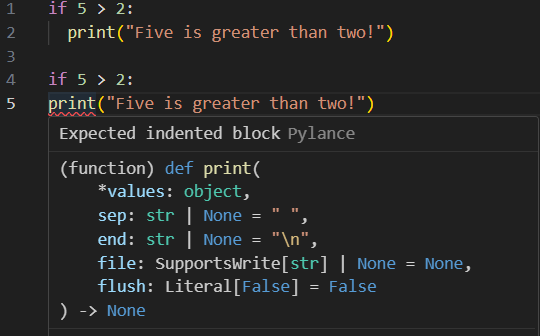
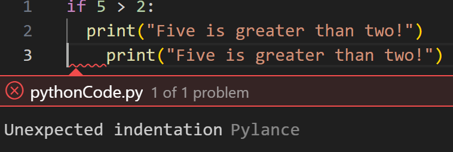

Date Taken: Fall 2025
Status: Work in Progress
Python is a high-level, interpreted programming language known for its readability and versatility. It supports multiple programming paradigms, including procedural, object-oriented, and functional programming. Python is widely used in web development, data analysis, artificial intelligence, scientific computing, and automation due to its extensive libraries and frameworks.
Python's simplicity, versatility, and extensive ecosystem make it a popular choice for developers across various fields. Whether you're a beginner looking to learn programming or an experienced developer working on complex projects, Python offers the tools and resources needed to succeed.
Today we are going to learn the basics of Python programming.
To begin let just print "Hello, World!" In order to make a print statement, all you need is one line of code "print()" Inside the parameter of print you can have either single quote '' or double quote "".
print("Hello, World!")Now, 1 more important thing to remember about in any langauges is comments. Comments is an important function in all languages because it allows you to write notes to yourself or other developers about what the code is doing. In Python, comments are made using the # symbol. Anything after the # symbol on that line will be ignored by the interpreter.
# This is a comment in PythonA 2nd important fact to remember about python is the indentation. Python uses indentation to indicate a block of code. In other programming languages the indentation in the code is for readability while in python it is for code functionality An example these indentation is shown below with and without indentation (Using if statements).

Another key thing to remember about indentation is you have to use the same number of indentation is the same code block. If not Python will give you an error.

Next, let's learn about variables. Variables are used to store data in a program. In Python, you can create a variable by simply assigning a value to a name using the = operator.
name = "Daniel"
age = 20
height = 6.0
In this example, we created three variables: name, age, and height. The variable name stores a string value, age stores an integer value, and height stores a float value.
Varaibles can be decalred with any data type and can even change type after the first initialization. As you can see below the first initialization of the variable x is a string, but I change the type to a integer after assigning it to 10 afterwards.
x = "Hello"
x = 10
print(x) # Output: 10
If you want to specify the variable type, you use casting. Casting is done by using the type name as a function. For example, to cast a variable to an integer, you would use int(). Here are some examples of casting in Python:
x = int(5) # x will be an integer
y = float(5.0) # y will be a float
z = str(5) # z will be a string
You can also use the type() function to determine the variable type
x = 5
print(type(x)) # Output: <class 'int'>
y = "Hello"
print(type(y)) # Output: <class 'str'>
Variables is also very case sensitive
name = "Daniel"
Name = "John"
print(name) # Output: Daniel
print(Name) # Output: John
Varible name with more then one word can be diffcult to read. There are several techniques you can do to make them more readable. This is shown below:
# Camel Case - Each word, except the first is capitalize
myVariableName = "Daniel"
# Pascal Case - Each word is capitalized
MyVariableName = "Daniel"
# Snake Case - Each word is separated by an underscore
my_variable_name = "Daniel"
Python also allow you to assign multiple variables in one line.
x, y, z = "Orange", "Banana", "Cherry"
print(x) # Output: Orange
print(y) # Output: Banana
print(z) # Output: Cherry
x = y = z = "Orange"
print(x) # Output: Orange
print(y) # Output: Orange
print(z) # Output: Orange
Unpacking: If you have a collection of values in a list, tuple, etc. Python will allow you to extract the values into variables.
fruits = ["Apple", "Banana", "Cherry"]
x, y, z = fruits
print(x) # Output: Apple
print(y) # Output: Banana
print(z) # Output: Cherry
There are several ways to output variables in Python. The most common way is to use the print() function.
# This is a + operator that joins 2 strings together
name = "Daniel"
print("Hello, " + name)
# Output: Hello, Daniel
# For number the + operator adds the numbers together
x = 20
y = 30
print(x + y)
# Output: 50
# The print() funtion you can output multiple variables by separating them with a comma
x = "Python"
y = "is"
z = "fun"
print(x, y, z)
# Output: Python is fun
# The print() function does not allow you to use the + operator to join strings and add numbers together
name = "Daniel"
age = 20
print(name + age)
# Output: TypeError: can only concatenate str (not "int") to str
print(name + str(age)) # You can fix this error by casting the integer to a string
# You can also use the comma to output multiple variables of different types
name = "Daniel"
age = 20
print(name, age)
# Output: Daniel 20
You can also use the format() method to output variables.
name = "Daniel"
age = 20
print("My name is {} and I am {} years old.".format(name, age))
# Output: My name is Daniel and I am 20 years old.
Another way to output variables is to use f-strings (formatted string literals). This method is available in Python 3.6 and later.
name = "Daniel"
age = 20
print(f"My name is {name} and I am {age} years old.")
# Output: My name is Daniel and I am 20 years old.
Global variables are variables that are defined outside of a function and can be accessed from anywhere in the code. To create a global variable, simply define it outside of any function.
x = "awesome" # Global variable
def my_function():
print(x)
my_function() # Output: awesome
If you create a variable outside a function that has a same name as the variable inside the function, the 2 variables are considered different. The variable inside the function is said to "shadow" the variable outside.
x = "awesome" # Global variable
def my_function():
x = "fantastic" # Local variable
print(x)
my_function() # Output: fantastic
print(x) # Output: awesome
To create a global variable inside a function, you can use the global keyword.
def my_function():
global x # Declare x as a global variable
x = "fantastic"
my_function() # Call the function to create the global variable
print(x) # Output: fantastic
You can also use the global keyword to modify a global variable inside a function.
x = "awesome" # Global variable
def my_function():
global x # Declare x as a global variable
x = "fantastic"
my_function() # Call the function to create the global variable
print(x) # Output: fantastic
In Python, there are several built-in data types that you can use to store and manipulate data. Here are some of the most commonly used data types in Python:
str — Sequence of characters enclosed in quotes. Example: "Hello"int, float, complex — Integers, floating-point, and complex numbers. Example: 10, 3.14, 2 + 3jlist, tuple, range — Ordered collections. Lists are mutable, tuples are immutable, and ranges represent numeric sequences.dict — Key-value pairs for fast lookups. Example: {"name": "Alice", "age": 30}set, frozenset — Unordered collections of unique elements. frozenset is immutable.bool — Logical values True or False.bytes, bytearray, memoryview — Represent binary data.NoneType — Represents the absence of a value; only value is None.You can check the data type of a variable using the type() function. If you want to specify the data type, you can use type casting.
x = 5 or x = int(5) # int() is casting to integer
print(type(x)) # Output: <class 'int'>
y = 3.14 or y = float(3.14) # float() is casting to float
print(type(y)) # Output: <class 'float'>
z = "Hello" or z = str("Hello") # str() is casting to string
print(type(z)) # Output: <class 'str'>
a = True or a = bool(True)
print(type(a)) # Output: <class 'bool'>
b = [1, 2, 3] or b = list([1, 2, 3])
print(type(b)) # Output: <class 'list'>
c = (1, 2, 3) or c = tuple((1, 2, 3))
print(type(c)) # Output: <class 'tuple'>
d = {"name": "Alice", "age": 30} or d = dict({"name": "Alice", "age": 30})
print(type(d)) # Output: <class 'dict'>
e = {1, 2, 3} or e = set([1, 2, 3])
print(type(e)) # Output: <class 'set'>
f = None
print(type(f)) # Output: <class 'NoneType'>